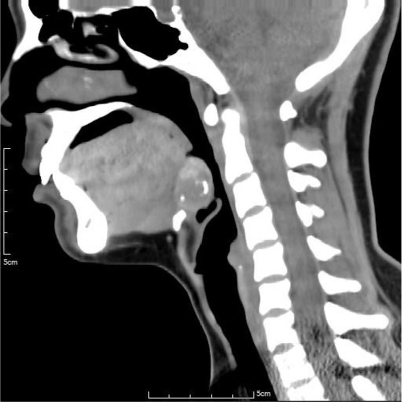
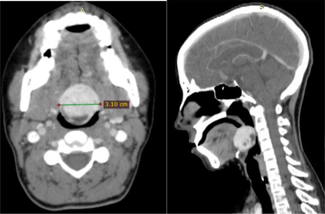
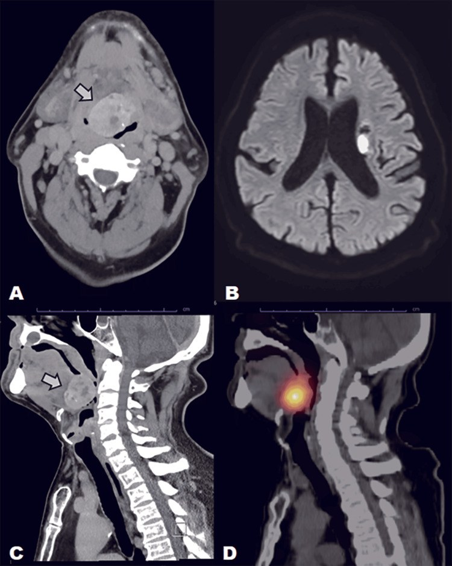

1899 — Bướu giáp lạc chỗ ở đáy lưỡi (lingual thyroid): khối tăng đậm đường giữa, "tuyến giáp rỗng" ở cổ — và vì sao phải xạ hình TRƯỚC khi sinh thiết hay cắt
Tags: pattern:khoi-day-luoi pattern:tang-dam pattern:voi-hoa pattern:khong-dong-nhat vung:loi vung:tuyen-giap vung:hau-mieng vung:co protocol:CT-co-can-quang protocol:MRI protocol:xa-hinh protocol:SA-Doppler protocol:noi-soi
Mức chắc chắn (certainty): tổng hợp y văn (literature synthesis) — ghép 3 bài open-access đã đọc toàn văn: Huang H, Lin YH, Medicine (Baltimore) 2021 (PMC8556010, CC BY 4.0) — ca bướu giáp lạc chỗ 26 × 24 × 19 mm có vôi hóa viền, suy giáp nặng; Alebie HK et al., Int J Surg Case Rep 2024 (PMC11277313, CC BY 4.0) — ca 3,10 × 3 cm kèm thuật toán xử trí; Yoneoka Y et al., Cureus 2025 (PMC12796546, CC BY 4.0) — ca 4,0 × 3,5 × 3,0 cm vôi hóa thô gây hẹp đường thở, phát hiện tình cờ trên CT sọ não. Số nào nguồn không đưa thì ghi "chưa rõ".
Bài này trả lời 4 câu hỏi của một khối đáy lưỡi đường giữa trên CT: (1) Đây là bướu giáp lạc chỗ hay u thật? (2) Vì sao nó "trắng" trên CT không cản quang — có phải máu hay vôi hóa ác tính? (3) Có được sinh thiết/cắt ngay không? (4) Khi nào chỉ theo dõi – khi nào cắt – khi nào đốt bằng iod phóng xạ? Điểm tựa duy nhất của bài: bướu giáp lạc chỗ có thể LÀ toàn bộ tuyến giáp của người bệnh (> 70% không có mô giáp ở cổ). Cắt nó mà chưa chứng minh bằng xạ hình = suy giáp vĩnh viễn do phẫu thuật.
1. Tổng quan bệnh học – cơ chế hình ảnh
1.1 Phôi thai: vì sao tuyến giáp "dừng chân" ở đáy lưỡi
- Tuyến giáp phôi thai bắt đầu như một nụ nội bì ở sàn hầu, ngay sau củ lưỡi (foramen caecum). Trong tuần 7, nụ này di chuyển xuống dọc ống giáp–lưỡi (thyroglossal duct) rồi dừng trước khí quản. Bất kỳ điểm dừng nào trên đường đi đều tạo mô giáp lạc chỗ (ectopic thyroid tissue); dừng ở đáy lưỡi = bướu giáp lạc chỗ (lingual thyroid).
- Dịch tễ (đã đối chiếu 3 nguồn): mô giáp lạc chỗ gặp 1/100.000 – 1/300.000 người; bướu giáp lạc chỗ chiếm ~90% các ca lạc chỗ; nữ 70–80% (một số nguồn ghi tỉ lệ nữ:nam 3:1). Trong 200 ca tử thiết, 10% có mô giáp lạc chỗ đường kính tới 1 cm — nghĩa là phần lớn tồn tại im lặng, chỉ lộ ra khi tuyến phì đại.
- Vì sao phì đại ở tuổi dậy thì, thai kỳ, suy giáp: mô lạc chỗ chịu cùng trục TSH; khi nhu cầu tăng (dậy thì, có thai, thiếu iod, dùng lithium) tuyến phì đại và gây nuốt vướng, khàn tiếng, chảy máu, khó thở. Vì thế bệnh hay được phát hiện ở thập kỷ 2–4, dù bẩm sinh.
1.2 TẠI SAO khối này tăng đậm trên CT không cản quang
- Mô giáp tổng hợp và dự trữ iod trong thyroglobulin. Iod có Z = 53, nên ở năng lượng tia X chẩn đoán hiệu ứng quang điện (photoelectric) chiếm ưu thế → đậm độ cao hơn cơ lưỡi rõ rệt. Trên CT không cản quang, nhu mô giáp bình thường đã 60–100 HU (cơ ~40–50 HU); bướu giáp lạc chỗ thường tăng đậm đồng nhất hoặc hỗn hợp, có ca đo được 65–120 HU tùy hàm lượng iod và vôi hóa.
- Vôi hóa gặp được và KHÔNG đồng nghĩa ác tính: ca PMC8556010 có vôi hóa viền (ring calcification) trên khối 26 × 24 × 19 mm; ca PMC11277313 có khối 3,10 × 3 cm; ca PMC12796546 có vôi hóa thô trong khối 4,0 × 3,5 × 3,0 cm. Đây là vôi hóa thoái hóa/nang trong mô giáp, không phải "vôi hóa kiểu sụn" của ung thư.
- TẠI SAO ngấm thuốc mạnh: tuyến giáp có mạng mao mạch dày; trên CT có cản quang khối ngấm thuốc đồng nhất, mạnh hơn cơ, giữ thuốc ở thì muộn — khác u thần kinh hay lymphoma (ngấm ít, không đồng nhất).
- TẠI SAO T1/T2 đặc trưng: thyroglobulin (protein) và colloid làm T1 hơi tăng so với cơ, T2 tăng; không có dấu hiệu "tối đen" như nang đơn thuần, cũng không có giới hạn khuếch tán mạnh như lymphom/ung thư tế bào vảy.
1.3 Con số quyết định thái độ: "tuyến giáp rỗng" và suy giáp
- > 70% bệnh nhân bướu giáp lạc chỗ không có mô giáp ở vị trí bình thường. Đây là lý do phải xạ hình trước mọi can thiệp: nếu khối là nguồn giáp duy nhất, cắt bỏ = suy giáp vĩnh viễn, phải thay hormone suốt đời.
- Suy giáp gặp tới 70% bệnh nhân (thường dưới lâm sàng, TSH tăng bù). Ca PMC12796546 có TSH 11,4 µIU/mL — tăng nhẹ nhưng đủ giải thích phì đại.
- Ung thư trong bướu giáp lạc chỗ < 1%, chủ yếu ung thư nhú (papillary), thường chỉ phát hiện sau khi cắt. Vì vậy không được "cắt để loại trừ ung thư" ở một khối lành tính, không triệu chứng.
2. Mẫu hình + chẩn đoán phân biệt theo vị trí (gamut)
2.1 Bốn mẫu hình cần nhận ra
- Mẫu A — khối đặc đường giữa đáy lưỡi, tăng đậm trên CT không cản quang, đồng nhất, bờ rõ, ± vôi hóa: bướu giáp lạc chỗ điển hình. Kèm "ổ giáp rỗng" ở cổ (không thấy tuyến giáp trước khí quản).
- Mẫu B — khối đáy lưỡi + hẹp đường thở: bướu giáp lạc chỗ phì đại lớn (ca 4,0 cm làm hẹp nặng hầu họng); phải đánh giá đường thở trước khi gây mê/sinh thiết.
- Mẫu C — khối đáy lưỡi có nang/hỗn hợp, vôi hóa, ngấm thuốc không đều: bướu giáp lạc chỗ thoái hóa nang — vẫn lành tính; không suy ra ác tính chỉ vì không đồng nhất.
- Mẫu D — khối lệch bên đáy lưỡi/amidan lưỡi: không phải bướu giáp lạc chỗ (vốn ở đường giữa) → nghĩ phì đại amidan lưỡi, u tuyến nước bọt phụ, hemangioma/lymphangioma, ung thư tế bào vảy, lymphoma.
2.2 Gamut theo vị trí
- Đường giữa, ngay sau foramen caecum (đáy lưỡi): bướu giáp lạc chỗ, nang ống giáp–lưỡi (thyroglossal duct cyst) (thường thấp hơn, dạng nang, di động khi nuốt/lè lưỡi), dermoid/teratoma, u hạt tế bào (granular cell tumor).
- Đường giữa nhưng thấp (dưới xương móng – trước giáp trạng): nang ống giáp–lưỡi, tuyến giáp lạc chỗ dưới lưỡi, hạch giáp móng.
- Lệch bên đáy lưỡi/amidan lưỡi: phì đại amidan lưỡi (rất hay gặp, đối xứng), u tuyến nước bọt phụ, hemangioma, lymphoma, ung thư tế bào vảy.
- Trong xoang lưỡi–giáp (vallecula): nang biểu bì, u nhú, di căn.
2.3 Sơ đồ quyết định (kèm mục 4)
flowchart TD
A[Khối đáy lưỡi đường giữa] --> B{CT không cản quang: tăng đậm + tuyến giáp rỗng ở cổ?}
B -->|Có| C[Xạ hình 99mTc / I-123]
B -->|Không| D[Siêu âm + MRI, cân nhắc FNAC]
C --> E{Uptake đáy lưỡi, KHÔNG uptake ở cổ?}
E -->|Có| F[Bướu giáp lạc chỗ = tuyến giáp DUY NHẤT]
E -->|Không| G[Khối không phải mô giáp: xử trí theo bản chất]
F --> H{Triệu chứng / hẹp đường thở / suy giáp?}
H -->|Không| I[Theo dõi + TSH mỗi 6–12 tháng]
H -->|Suy giáp| J[Levothyroxine — thường teo nhỏ]
H -->|Tắc nghẽn, chảy máu, thất bại nội khoa| K[Cắt qua miệng / laser / RFA / I-131 — bảo tồn tối đa]
3. Bảng so sánh phân biệt (ma trận đối chiếu)
| Thực thể (entity) | Hình ảnh điển hình | Chốt vào (rule-in) | Chốt loại (rule-out) | Gợi ý xác nhận |
|---|---|---|---|---|
| Bướu giáp lạc chỗ (lingual thyroid) | Khối đặc đường giữa đáy lưỡi, tăng đậm trên CT không cản quang (60–120 HU), ngấm thuốc mạnh, ± vôi hóa; không thấy tuyến giáp ở cổ | Uptake 99mTc/I-123 tại đáy lưỡi + KHÔNG uptake vùng cổ; T1 hơi tăng, T2 tăng | Có tuyến giáp bình thường ở cổ với uptake bình thường → khối đáy lưỡi không phải mô giáp duy nhất (vẫn có thể là mô lạc chỗ phụ) | Xạ hình là tiêu chuẩn vàng; CT/MRI để đo và đánh giá đường thở |
| Nang ống giáp–lưỡi | Khối dạng nang, dịch 0–20 HU, vỏ mỏng, thường dưới xương móng, di động khi lè lưỡi | Vị trí thấp, thành nang + cuống lên xương móng, không đặc | Đặc, tăng đậm như mô giáp → không phải nang đơn thuần | Siêu âm + CT; xạ hình âm tính trong nang |
| Phì đại amidan lưỡi | Khối lệch bên, đối xứng hai bên, cùng đậm độ cơ, không vôi hóa, không ngấm mạnh | Đối xứng, bờ múi, không có "tuyến giáp rỗng" | Đường giữa, tăng đậm, có uptake → bướu giáp lạc chỗ | So sánh hai bên; xạ hình âm tính |
| Hemangioma / lymphangioma | Khối ngấm thuốc kiểu mao mạch/tĩnh mạch, có thể tăng đậm muộn; lymphangioma dạng nang nhiều thùy | Ngấm thuốc theo thì mạch, ± dòng chảy Doppler | Không uptake phóng xạ, không tăng đậm trên CT không cản quang | MRI T2 rất cao (lymphangioma); xạ hình âm |
| U tuyến nước bọt phụ | Khối lệch bên, ngấm thuốc vừa, có thể vôi hóa nhỏ | Vị trí lệch bên, typ mô tuyến nước bọt | Đường giữa + tăng đậm + uptake → loại | MRI + FNAC |
| Ung thư tế bào vảy / lymphoma | Khối xâm lấn, bờ không rõ, hạch cổ, ngấm thuốc không đều, có thể hoại tử | Loét, xâm lấn cơ, hạch hoại tử | Bờ rõ, tăng đậm đồng nhất, không hạch → ít khả năng | Sinh thiết sau khi loại trừ mô giáp |
| Dermoid / teratoma | Khối chứa mỡ (−50 đến −100 HU) và/hoặc vôi hóa, có thể có răng | Mỡ trong khối trên CT/MRI fat-sat | Không có mỡ, tăng đậm như mô giáp → loại | CT/MRI; xạ hình âm |
| U hạt tế bào (granular cell) | Khối nhỏ, đặc, đáy lưỡi, ngấm thuốc vừa | Niêm mạc phủ nguyên vẹn, không vôi hóa | Không uptake, không tăng đậm mạnh | Sinh thiết |
- Ảnh ghép đối chiếu (cùng một ca):
— CT dọc trước cản quang cho thấy khối đáy lưỡi tăng đậm, vôi hóa viền, và SPECT/CT 99mTc cho thấy uptake khu trú tại đáy lưỡi, KHÔNG uptake ở vùng cổ — hai mảnh bằng chứng của cùng một chẩn đoán.
4. Protocol chụp + hệ phân độ/ngưỡng xử trí
4.1 Trình tự chẩn đoán (không đảo thứ tự)
- Lâm sàng + soi gương/nội soi ống mềm: đánh giá kích thước, chảy máu, mức hẹp đường thở; hỏi nuốt vướng, khàn tiếng, khó thở khi nằm.
- Xét nghiệm: TSH, FT4, anti-TPO. TSH tăng gặp ở phần lớn; suy giáp có thể nặng dù khối nhỏ.
- Siêu âm cổ (và đáy lưỡi qua đường dưới cằm): xác nhận có/không có tuyến giáp ở vị trí bình thường, đo khối, Doppler.
- CT cổ không cản quang ± có cản quang, lát ≤ 1–2 mm: đo khối theo 3 chiều, đánh giá đường thở và vôi hóa. Đây là nơi hay phát hiện tình cờ (ca PMC12796546 phát hiện trên CT sọ não vì đột quỵ).
- MRI (T1, T2, T1 fat-sat sau tiêm): khi cần đánh giá xâm lấn đáy lưỡi/đường thở hoặc phân biệt với u.
- Xạ hình 99mTc-pertechnetate hoặc I-123 — BẮT BUỘC trước can thiệp: chứng minh mô giáp và vị trí duy nhất; đây là bước quyết định "cắt được hay không".
- FNAC: chỉ khi khối không phải mô giáp hoặc có dấu hiệu nghi ác tính; không làm thường quy vì nguy cơ chảy máu và nhiễm độc giáp thoáng qua; kim qua khối giáp mạch máu giàu có thể gây chảy máu đường thở.
4.2 Ngưỡng xử trí (theo triệu chứng, không theo mm đơn thuần)
| Tình huống | Thái độ |
|---|---|
| Không triệu chứng, đường thở rộng, TSH bình thường | Theo dõi + TSH mỗi 6–12 tháng; không sinh thiết |
| Suy giáp (TSH tăng) | Levothyroxine — giảm TSH làm khối teo nhỏ; theo dõi 3–6 tháng |
| Nuốt vướng/khàn nhiều, khối to, thất bại nội khoa | Cắt qua miệng (transoral) / laser / RFA — bảo tồn mô giáp tối đa |
| Hẹp đường thở nặng, chảy máu tái diễn | Can thiệp sớm, bảo vệ đường thở trước; cân nhắc nút mạch trước mổ để giảm chảy máu |
| Không mổ được / khối lớn / bệnh nhân chọn | I-131 (phải xác nhận là tuyến giáp duy nhất; hiệu quả teo chậm) |
| Nghi ác tính (loét, xâm lấn, hạch) | Sinh thiết có kiểm soát + xử trí theo mô học |
4.3 Cạm bẫy protocol
- Cản quang iod làm "khoá" xạ hình: iod trong thuốc cản quang ức chế bắt giữ iod (hiệu ứng Wolff–Chaikoff); kinh điển phải hoãn 4–6 tuần sau cản quang iod trước I-123/I-131 (99mTc-pertechnetate ít bị ảnh hưởng hơn nhưng vẫn nên tránh ngay sau tiêm). Số "4–6 tuần" là ngưỡng kinh điển, chưa có thử nghiệm ngẫu nhiên.
- Chụp CT có cản quang trước xạ hình là sai thứ tự hay gặp ở khoa cấp cứu (bệnh nhân vào vì khó thở, được chụp CTA trước).
- Trẻ em: ưu tiên siêu âm + MRI không bức xạ; chỉ CT khi cần đánh giá đường thở/xương. Liều thấp theo ALARA.
5. Biến thể bình thường và cạm bẫy
- Biến thể bình thường: mô giáp lạc chỗ nhỏ, không triệu chứng gặp ở 10% ca tử thiết (đường kính tới 1 cm) — đừng gọi là "khối u" hay chỉ định cắt. Amidan lưỡi phì đại hai bên, đối xứng, cùng đậm độ cơ là biến thể hay bị đọc nhầm thành khối.
- Cạm bẫy 1 — tăng đậm = máu? Trên CT không cản quang, khối giáp tăng đậm đồng nhất có thể bị đọc là "máu tụ/khối xuất huyết". Phân biệt: máu tụ không có uptake xạ hình, đậm độ giảm dần theo thời gian, hình dạng theo khoang; mô giáp giữ đậm độ và bắt xạ.
- Cạm bẫy 2 — vôi hóa = ác tính? Không. Vôi hóa viền/thô trong mô giáp là thoái hóa; ung thư trong bướu giáp lạc chỗ < 1% và không chẩn đoán được bằng vôi hóa.
- Cạm bẫy 3 — sinh thiết trước xạ hình: nếu khối là tuyến giáp duy nhất, sinh thiết/cắt có thể gây chảy máu đường thở và mất toàn bộ mô giáp. Luôn xạ hình trước.
- Cạm bẫy 4 — bỏ sót "tuyến giáp rỗng": người đọc chỉ mô tả khối mà không ghi có/không có tuyến giáp ở cổ — đây là dữ kiện làm thay đổi hoàn toàn thái độ.
- Cạm bẫy 5 — hội chứng "thoả mãn tìm kiếm": thấy khối đáy lưỡi rồi dừng, bỏ qua hạch cổ, nang ống giáp–lưỡi đồng thời, hoặc ung thư thứ hai.
- Cạm bẫy 6 — trẻ nhỏ khó thở: khối đáy lưỡi ở trẻ có thể là nguyên nhân khó thở khi nằm bị quy cho hen/viêm thanh quản; CT/MRI đường thở là chìa khóa.
6. Tự lượng giá — Blind Quiz ngay trên trang tĩnh
Ca 1 — nữ 29 tuổi, mệt mỏi 3 tháng, không khối cổ

- Gợi ý lâm sàng: mệt mỏi, chậm chạp, không sờ thấy tuyến giáp ở cổ.
- Câu hỏi: Khối ở đâu, đậm độ so với cơ? Dấu hiệu nào trên CT gợi ý bản chất mô giáp? Ba chẩn đoán phân biệt? Bước tiếp theo trước khi sinh thiết?
Bấm để hiện đáp án (findings + chẩn đoán)
- Dấu hiệu: khối 26 × 24 × 19 mm ở đáy lưỡi đường giữa, tăng đậm hỗn hợp so với cơ, có vôi hóa viền; không thấy tuyến giáp ở vị trí trước khí quản.
- Chẩn đoán: bướu giáp lạc chỗ (lingual thyroid) kèm suy giáp — mô giáp dự trữ iod nên tăng đậm trên CT không cản quang; vôi hóa là thoái hóa, không phải ác tính.
- Bước tiếp theo: xạ hình 99mTc/I-123 để chứng minh đây là tuyến giáp duy nhất (trong ca gốc: uptake đáy lưỡi, không uptake ở cổ) → điều trị levothyroxine, không cắt.
- Nguồn ảnh: Huang H, Lin YH, Medicine (Baltimore) 2021, PMC8556010 Fig. 2, CC BY 4.0.
Ca 2 — nữ 23 tuổi, nuốt vướng tăng dần

- Gợi ý lâm sàng: nuốt vướng, khàn nhẹ, không khó thở khi nghỉ.
- Câu hỏi: Đo kích thước khối và mô tả vị trí? Có dấu hiệu xâm lấn không? Chẩn đoán khác biệt chính là gì?
Bấm để hiện đáp án (findings + chẩn đoán)
- Dấu hiệu: khối 3,10 × 3 cm ở đáy lưỡi, đồng nhất, ngấm thuốc, bờ rõ, không xâm lấn cơ lưỡi; không thấy tuyến giáp ở cổ trên siêu âm/CT.
- Chẩn đoán: bướu giáp lạc chỗ — bờ rõ và ngấm thuốc đều là dấu hiệu lành tính; phân biệt chính với phì đại amidan lưỡi (lệch bên, cùng đậm độ cơ) và u tuyến nước bọt phụ (lệch bên).
- Xử trí trong ca gốc: levothyroxine làm giảm kích thước, sau đó cắt chọn lọc vì còn nuốt vướng.
- Nguồn ảnh: Alebie HK et al., Int J Surg Case Rep 2024, PMC11277313 Fig. 3, CC BY 4.0.
Ca 3 — nam, đột quỵ, CT sọ não tình cờ thấy khối đáy lưỡi

- Gợi ý lâm sàng: nhập viện vì đột quỵ; khó nuốt và khó bảo vệ đường thở sau đột quỵ.
- Câu hỏi: Khối có đặc điểm gì bất thường về kích thước? Vì sao đường thở là vấn đề cấp cứu ở ca này? Xạ hình cho thấy gì?
Bấm để hiện đáp án (findings + chẩn đoán)
- Dấu hiệu: khối 4,0 × 3,5 × 3,0 cm, vôi hóa thô, hẹp nặng hầu họng trên CT; DWI cho thấy nhồi máu bao trong trái (bệnh nền); xạ hình I-123: uptake mạnh ở đáy lưỡi, không thấy tuyến giáp ở cổ.
- Chẩn đoán: bướu giáp lạc chỗ lớn — đột quỵ làm mất phản xạ bảo vệ đường thở, biến khối lành tính thành cấp cứu đường thở.
- Bài học: kích thước 4 cm + vôi hóa thô vẫn có thể lành tính; quyết định can thiệp dựa trên triệu chứng và đường thở, không dựa trên vẻ "ác tính" của vôi hóa.
- Nguồn ảnh: Yoneoka Y et al., Cureus 2025, PMC12796546 Fig. 1, CC BY 4.0.
Bài liên quan chéo
- 230 – Tuyến giáp ACR TI-RADS & hạch cổ — đọc nhân giáp tại chỗ.
- 1815 – Suy giáp do quá tải iod ở sơ sinh — hiệu ứng Wolff–Chaikoff và cản quang iod.
- 1622 – Đốt cồn nang giáp lành tính — can thiệp tối thiểu xâm lấn tuyến giáp.
- 3066 – U nhú đảo ngược mũi xoang — tiếp cận khối đường giữa vùng mũi xoang (khác vùng, cùng nguyên lý "chân bám").
Ảnh
images/1899_lingual-thyroid_CT_PMC8556010-f2.jpg— CT dọc cổ không cản quang, khối 26 × 24 × 19 mm có vôi hóa viền. Huang H, Lin YH, Medicine (Baltimore) 2021, PMC8556010 Fig. 2, CC BY 4.0.images/1899_lingual-thyroid_Xa-Scan_PMC8556010-f1.jpg— SPECT/CT 99mTc: uptake đáy lưỡi, không uptake vùng cổ. Cùng bài, Fig. 1, CC BY 4.0.images/1899_lingual-thyroid_CT_PMC11277313-f3.jpg— CT cổ có cản quang (ngang + dọc), khối 3,10 cm. Alebie HK et al., Int J Surg Case Rep 2024, PMC11277313 Fig. 3, CC BY 4.0.images/1899_lingual-thyroid_CT-Scan_PMC12796546-f1.jpg— CT không cản quang + DWI + xạ hình I-123. Yoneoka Y et al., Cureus 2025, PMC12796546 Fig. 1, CC BY 4.0.images/composite_lingual-thyroid_CT-SPECT.jpg— ảnh ghép CT + SPECT/CT cùng ca, tạo bằngtools/make_composite.py.
Không dùng để chẩn đoán độc lập khi chưa có người hướng dẫn.